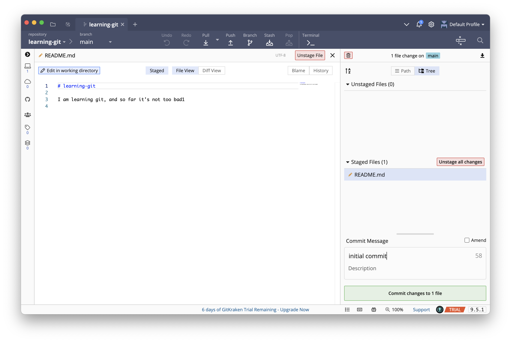

Git for version control
Some motivating examples
While working on your analysis code, you accidentally erase the first 35 lines of the script. You only discover this three days later, when you restart R and try to run the script from the top.
The code you wrote last week is suddenly giving you different results. A bunch of variables are missing, and the standard errors are huge. When you’re talking with your collaborator, he says that he was cleaning the data a few days ago and everything seemed fine. When you go to check, you discover that he’s replaced your 827 survey responses with 6 group summaries.

You’re working on a paper with two coauthors. You prepare the final draft to send for submission: paper final.docx. But one of your coauthors discovers a typo. Now it’s paper final fixed typo.docx. Another realizes six references are missing. paper final fixed typo refs.docx. That’s getting confusing so you change it to paper 2 Aug 2021.docx. Once it comes back from review you need to make revisions. Now you have paper 30 Jan 2022.docx and, after your collaborators make their changes, paper 12 February 2022 DJH.docx and paper 12 February 20222 final.docx.
Version control
- Basic idea: Tools for tracking and reversing changes to code over time
- Useful for identifying and reversing breaking changes
- Implementations upload to cloud, track who contributes code, control who can suggest vs. actually change code
- Good for collaboration, publishing code
Git
- One of many version control systems
- Very popular in part thanks to GitHub, which provides free hosting git repositories
- Resources for students (and teachers): https://education.github.com/
Gitting started
- git is very hard
- We’re going to use the GitKraken GUI to ease into things
Initial commit

- Install GitKraken and go through the configuration steps
- Optional: Preferences -> UI Customization -> Theme -> GitKraken Light
- Create a new local repository
- New Tab -> Repositories -> Create a Repository -> Laptop symbol
learning-git with GitKraken- Name the new repo
learning-git - Outside of GitKraken, create a folder for materials for this class, and then a subfolder for livecoding exercises. Use this livecoding folder for “Initialize in.”
- GitKraken creates a new folder,
learning-git, with the fileREADME.mdmdis Markdown, a plain-text format that can be read by any text editor
- The context (right-click) menu for a file has shortcuts to open the file or show it in your OS’s file browser
- For now, open the file in GitKraken’s built-in text editor
- Click on the file to bring up the viewer
- Then click “Edit this file”
- Add some text and save (command/control-S)
- GitKraken automatically opens up the file stage pane
Tracking changes

- Tracking changes to a file involves two steps: Staging and committing
- Stage: You can stage files one at a time, or use the “Stage all changes” button
- This tells git that we want to store these changes to the file in its archive
- Commit: Type a message in the comment field and click Commit
- This tells git to go ahead and do the archiving process
- The commit is now displayed in the history panel
Make a few more changes to the file. Practice adding text, removing text, and committing them. Note how the changes accumulate in the history panel, and that you can view each change using Diff View.
Time travel
- We can checkout previous commits to work with old versions of our files
- In the example, suppose I made a commit with a mistake (my code stopped working or whatever)
- In the history panel, right-click on a previous commit and select Checkout this commit

- We can make changes to the file in the same way as usual,
- But when we go to stage, GitKraken warns us that we’re in an undetached head state
- To see what this means, try making a change to the file, adding and committing it, then checking out the commit with the
mainormastertag
The garden of forking branches
- To actually change the past, we’ll use a branch
- Branches allow git to track multiple distinct “timelines” for files
- For example, most major software projects will have separate “dev” (development) and “release” branches
- Individual branches will also be created for work on specific areas of the project
- This allows each area of active work to be isolated from work happening in other areas
fixing-mistake into main- After checking out the previous commit, click on Branch in the toolbar
- Name your new branch
fixing-mistake(no spaces!)
- Name your new branch
- Start to work on fixing the mistake in the file, then add and commit as usual
- Now checkout
main. Notice:- Your commits on
fixing-mistakedon’t disappear - The state of your file changes to the
mainversion - The History panel shows the split between the two branches
- Your commits on
- After we’ve finished fixing the mistake, we want to merge these changes back into
main- Make sure you’re on
main - Right-click on
fixing-mistakeand select “Merge fixing-mistake into main”
- Make sure you’re on
- GitKraken will show the commit pane, with a warning about Merge Conflicts
- This just means that the files you’re combining have conflicting histories, and git needs you to manually sort out what to keep and what to throw away
git is now in a special conflict-resolution state.
Until you resolve the conflicts and finish the merge, a lot of standard git functionality either won’t work at all or will cause weird problems.
If git starts giving you a bunch of weird errors, check to see if you’re in the middle of a merge and need to resolve conflicts.
- GitKraken will pull up a conflict resolution tool
- Choose which versions of conflicted lines to keep, and/or make edits directly in the bottom pane
- The output file will be automatically staged
- Hit “Commit and Merge” to complete the merge
- Main now points to the merge commit
Working with GitHub remotes

origin lives on GitHub. Source: https://happygitwithr.com/common-remote-setups.html#ours-youA remote is a copy of a repository that lives on a server somewhere else
Working with your own repos
- Look for the Remote section of left panel. Hover over the 0/0 and click to start creating a new remote
- Select GitHub, your account, and then click “Create remote and push local refs”
- GitKraken will take a moment to push (upload) the repo, then display a notification
- Click to view the repo on GitHub
- The URL should be
https://github.com/[username]/learning-git
- GitHub also provides a simple text editor
- Make a change or two, then look for the green “Commit changes…” button
- GitKraken may check in GitHub, and pick up the new commits on the remote
- If not: Confirm the changes show up on GitHub. Then, in GitKraken, bring up the command palette (control/command + P), type “fetch,” and select “Fetch All.”
- But the remote commits aren’t automatically loaded locally
- Click “Pull” to download them to your local copy
Lab: Working with someone else’s repos
- GitHub lets you download someone else’s repo (clone), and modify it locally, but not upload directly.
- You can suggest a change to someone else’s code by submitting a pull request, which first requires forking the repository.

- Start with the repo for this week’s lab: https://github.com/data-science-methods/lab-1-git
- Fork: Look for the
forkbutton in the upper-right - After forking, notice you’re now in your copy of the lab:
https://github.com/[username]/lab-1-git.
- Clone: After creating the fork, you need to download a copy to your machine.
- In GitKraken, open a New Tab, then click “Clone a repo”
- Select GitHub.com
- Recommended: Change “Where to clone to” to a specific folder for all the labs for this class
- Type “lab-1-git” into the text box. (Or just use the dropdown.)
- If GitKraken tells you that it can’t clone a private repo, this probably means you haven’t finished getting access to the GitHub Student Developer Pack. Back out of the cloning process, finish with GitHub, and then try cloning again.
- After opening the repo, click the “View All Files” checkbox or open the folder in your OS file browser
- Open
lab.htmlin your web browser andlab.Rmdin RStudio